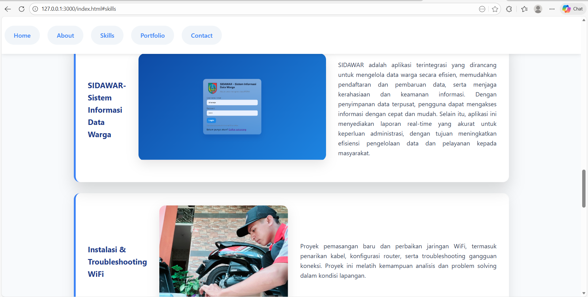
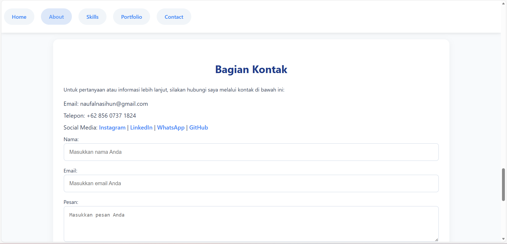
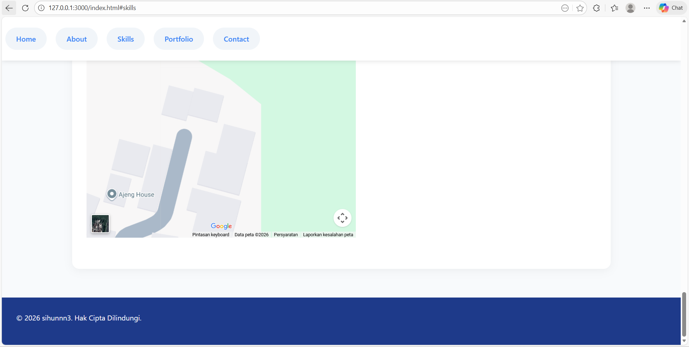
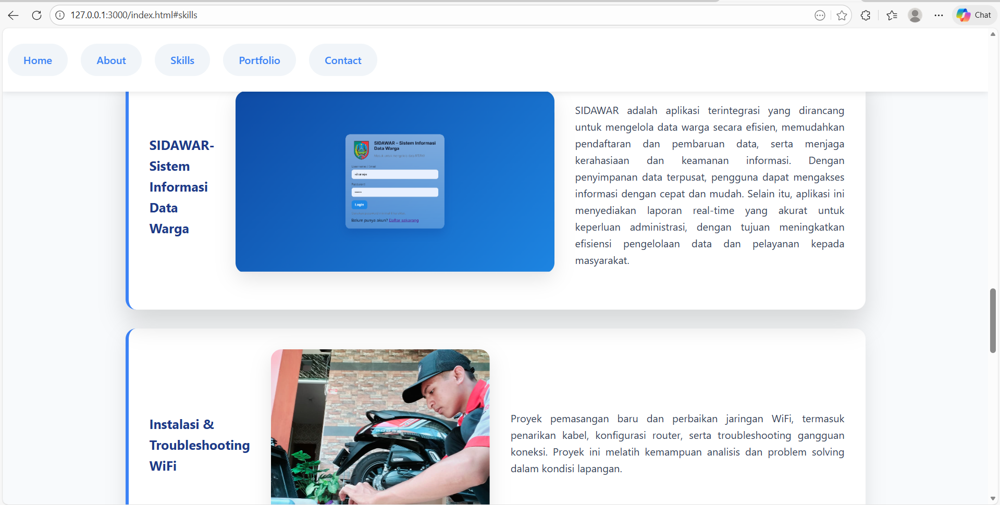
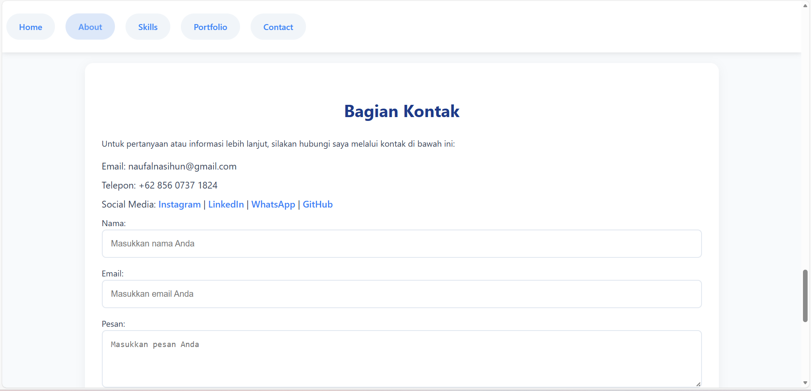
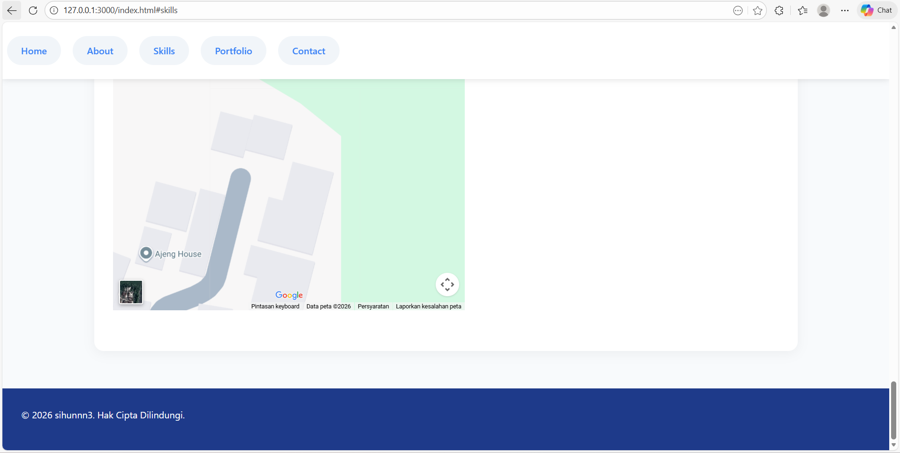

Naufal Nashihun Nizhom
Web Developer / IT Student

Web Developer / IT Student
 





Website portfolio pribadi yang menampilkan profil, keahlian, dan pengalaman kerja saya. Dibangun menggunakan HTML dan CSS dengan desain responsif, clean, dan modern. Website ini digunakan sebagai media personal branding dan dokumentasi proyek.


Aplikasi berbasis web untuk pengelolaan data warga seperti identitas, alamat, dan status kependudukan. Sistem ini membantu proses pendataan menjadi lebih rapi, cepat, dan terstruktur. Dibangun dengan HTML, CSS, JavaScript, dan Python.


Proyek ini berfokus pada rancang bangun aplikasi terintegrasi untuk mengelola siklus penjualan secara otomatis. Meliputi manajemen inventaris stok, pemrosesan transaksi (POS), pengelolaan database pelanggan, serta pelaporan keuangan real-time guna meningkatkan efisiensi dan akurasi data bisnis.
SIDAWAR adalah aplikasi web terintegrasi yang dirancang untuk mengelola data warga secara efisien, memudahkan pendaftaran dan pembaruan data, serta menjaga kerahasiaan dan keamanan informasi. Dengan penyimpanan data terpusat, pengguna dapat mengakses informasi dengan cepat dan mudah. Selain itu, aplikasi ini menyediakan laporan real-time yang akurat untuk keperluan administrasi, dengan tujuan meningkatkan efisiensi pengelolaan data dan pelayanan kepada masyarakat.
Proyek pemasangan baru dan perbaikan jaringan WiFi, termasuk penarikan kabel, konfigurasi router, serta troubleshooting gangguan koneksi. Proyek ini melatih kemampuan analisis dan problem solving dalam kondisi lapangan.